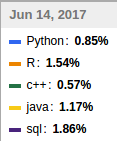
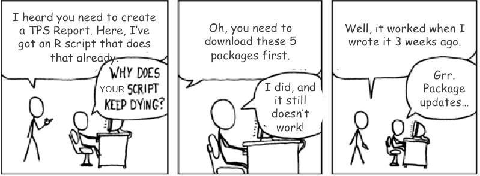

Lecture 1: Introduction to R
October 3, 2017
Contents
- R language
- How to get and use R?
- R Basics
- Course Objectives & Organization
R language
What is R?
- R is a language and environment for statistical computing and graphics.
- It was created by Rob Gentleman and Ross Ihaka in 1994; it is based on the S language developed at Bell Labs by John Chambers (Stanford Statistics).
- R is a GNU package, which means it is freely distributed software.
- R is an integrated suite of software facilities for data manipulation, statistical calculation and graphical display, and is highly extensible.
- It is, however, a fully planned and coherent system, rather than an incremental accumulation of specific and inflexible tools.
Why should you learn R?
Source: https://spectrum.ieee.org/
Why should you learn R?

Source: https://indeed.com/jobtrends

When should you use R?
- R can be used for data analysis and visualization.
- It provides efficient exploration and prototyping tools, but also offers powerful frameworks for building and fitting statistical models.
- R is very good when working with data that fits in the computer’s memory.
- It’s NOT as good for working with massive datasets whose elements need to be continuously accessed.
What makes R good?
- R is an interpreted language, i.e. programs do not need to be compiled into machine-language instructions.
- R is object oriented, i.e. it can be extended to include non-standard data structures (objects). A generic function can act differently depending on what objects you passe to it.
- R supports matrix arithmetics.
- R packages can generate publication-quality plots, and interactive graphics.
- Many user-created R packages contain implementations of cutting edge statistics methods.
What makes R good?
As of September 29, there are 11,502 packages on CRAN, 1,383 on Bioconductor, and many others on github)

How to get and use R?
How to install R?
R is open sources and cross platform (Linux, Mac, Windows).
To install it just go to the official R website (https://www.r-project.org/), download the latest version for your OS and follow the instructions.
How to run R? (interpreter mode)
Start the R console:
by launching the R graphical user interface
by typing “R” in the command line/terminal.
Then, use the R commands interactively. To quit use q().
To open a terminal window use:
- For linux:
Ctr + Alt + T - For Mac:
Command + space. Type “Terminal” and pressEnter.
- For Windows:
WinKey + R. Type “cmd” and pressEnter.


How to run R? (scripting mode)
A more convenient way to interact with R is to write a script.
A script should contains all code that you want to execute.
You should write your R code in a suitable editor (NOT in e.g. Microsoft Word).
After you finish writing your code, save is as an R script file, e.g.
script.R.Then, you can run/execute the code from the terminal by calling
Rscript script.R
R Editors
The most popular R editors are:
- Rstudio, an integrated development environment (IDE) for R.
- Emacs (a free, powerful, customizable editor for many languages).
In this class, we will use RStudio, as it is more user-friendly.

R packages

R packages
- R packages are a collection of R functions, complied code and sample data.
- They are stored under a directory called library in the R environment.
- Some packages are installed by default during R installation and are always automatically loaded at the beginning of an R session.
- Additional packages by the user from:
- CRAN The first and biggest R repository.
- Bioconductor: Bioinformatics packages for the analysis of biological data.
- github: packages under development
Available R packages
# Get library locations containing R packages
.libPaths()## [1] "/home/lanhuong/R/x86_64-pc-linux-gnu-library/3.4" "/usr/local/lib/R/site-library" "/usr/lib/R/site-library" "/usr/lib/R/library"# Get the info on all the packages installed
installed.packages()[1:5, 1:3]## Package LibPath Version
## abind "abind" "/home/lanhuong/R/x86_64-pc-linux-gnu-library/3.4" "1.4-5"
## acepack "acepack" "/home/lanhuong/R/x86_64-pc-linux-gnu-library/3.4" "1.4.1"
## ade4 "ade4" "/home/lanhuong/R/x86_64-pc-linux-gnu-library/3.4" "1.7-6"
## ADGofTest "ADGofTest" "/home/lanhuong/R/x86_64-pc-linux-gnu-library/3.4" "0.3"
## affy "affy" "/home/lanhuong/R/x86_64-pc-linux-gnu-library/3.4" "1.54.0"# Get all packages currently loaded in the R environment
search() ## [1] ".GlobalEnv" "package:stats" "package:graphics" "package:grDevices" "package:utils" "package:datasets" "package:methods" "Autoloads" "package:base"Installing R packages
- From CRAN:
# install.packages("Package Name"), e.g.
install.packages("glmnet") - From Bioconductor:
# First, load Bioconductor script. You need to have an R version >=3.3.0.
source("https://bioconductor.org/biocLite.R")
# Then you can install packages with: biocLite("Package Name"), e.g.
biocLite("limma") - From github:
# You need to first install a package "devtools" from CRAN
install.packages("devtools")
# Load the "devtools" package
library(devtools)
# Then you can install a package from some user's reporsitory, e.g.
install_github("twitter/AnomalyDetection")
# or using install_git("url"), e.g.
install_git("https://github.com/twitter/AnomalyDetection") Useful resources for learning R
R in a nutshell and introductory book by Joseph Adler - R tutorial (https://www.tutorialspoint.com/r/r_packages.htm)
Advanced R book by Hadley Wickham for intermediate programmers (http://adv-r.had.co.nz/Introduction.html)
swirlR-package for interactive learning for beginners (http://swirlstats.com/)Data Campcourses for data science, R, python and more (https://www.datacamp.com/courses)
R Basics
R as an extensible calculator
- R has allows you to intuitively input and easily compute elementary mathematical expressions , e.g.
23 + 8 ## [1] 31abs(-10) ## [1] 104 * exp(10) + sqrt(2) ## [1] 88107.28- Intuitive arithmetic operators: addition (
+), subtraction (-), multiplication (*), division: (/), exponentiation: (^), modulus: (%%)
Built-in constants
pi## [1] 3.141593LETTERS ## [1] "A" "B" "C" "D" "E" "F" "G" "H" "I" "J" "K" "L" "M" "N" "O" "P" "Q" "R" "S" "T" "U" "V" "W" "X" "Y" "Z"letters ## [1] "a" "b" "c" "d" "e" "f" "g" "h" "i" "j" "k" "l" "m" "n" "o" "p" "q" "r" "s" "t" "u" "v" "w" "x" "y" "z"month.abb ## [1] "Jan" "Feb" "Mar" "Apr" "May" "Jun" "Jul" "Aug" "Sep" "Oct" "Nov" "Dec"month.name ## [1] "January" "February" "March" "April" "May" "June" "July" "August" "September" "October" "November" "December"Special values in R
Some words are reserved in R and cannot be used as oject/variable/function names:
Infand–Infwhich respectively stand for positive and negative infinity. R will returnm this value if results are numbers that are too big.
2^1024 ## [1] Inf-1/0 ## [1] -InfNULLdenotes a null object and is often used as a default value of an argument in a function definition, e.g.:
f1 <- function(arg1, arg2 = NULL) {
print(paste("Argument 1 is:", arg1))
if(!is.null(arg2))
print(paste("Argument 2 is:", arg2))
} Special values in R
NArepresents a missing value (“not available”).
v <- c(1,2,3)
length(v) <- 4
# R automatically fills a NA into the end of `v` as no value is provided.
v ## [1] 1 2 3 NANaNmeans ‘Not a Number’, and can result from a computation that is undefined:
0/0 ## [1] NaN1/0 - 1/0 ## [1] NaNValues
In computer science a value is an expression which cannot be evaluated any further.
For example, an expression 2 + 3 is not a value as it can be reduced to expression 5.
Examples of values:
2, 1057, "Hello world!", "01/20/2016", Inf, TRUE
Values have types …
Data types
The values in R are limited to only 6 types:
- Logical:
TRUE/FALSE - Numeric:
12.4, 30, 2, 1009, 3.141593 - Integer:
2L, 34L, -21L, 0L - Complex:
3 + 2i, -10 - 4i - Character:
'a', '23.5', "good", "Hello world!", "TRUE" - Raw (used to hold raw bytes):
as.raw(TRUE), as.raw(2), charToRaw("Hello")
An atomic vector (one-element vector) is the simplest object in R, and it must belong to one of these 6 types.
Fortunately, R supports more complicated, R-objects which are built upon these atomic vectors.
Variables
- In computer programs, variables are used to store various information.
- Variables are nothing but reserved memory locations for storing values.
- In contrast to other programming languages like C or java, in R the variables are NOT declared as some data type/class (e.g. vectors, lists, data-frames).
- When variables are assigned with R-Objects, the data type of the R-object becomes the data type of the variable.
Naming variables
A valid variable name consists of letters, numbers and a dot or underline characters.
The variable name must start with a letter or a dot not followed by a number.
Examples of:
- valid variable names:
var_name, _var2_name, .var_name , var.name3.
- invalid variable names:
var_name%, var.name!, 2var_name, .2var_name
Variable assignment
Variable assignment can be done using the following operators: =, <-, ->:
# Assignment using equal operator.
var.1 = 34759
# Assignment using leftward operator.
var.2 <-"learn R"
#Assignment using rightward operator.
TRUE -> var.3 The values of the variables can be printed with print() function, or cat().
print(var.1) ## [1] 34759cat("var.2 is ", var.2)## var.2 is learn Rcat("var.3 is ", var.3 ,"\n") ## var.3 is TRUEVariable class
R is a dynamically typed language, which means that we can change a variable’s data type of the same variable again and again when using it in a program.
var_x <- "Hello"
cat("The class of var_x is", class(var_x),"\n")## The class of var_x is charactervar_x <- 34.5
cat(" Now the class of var_x is ",class(var_x),"\n")## Now the class of var_x is numericvar_x <- 27L
cat(" Next the class of var_x becomes ",class(var_x),"\n") ## Next the class of var_x becomes integerYou can see what variables are currently available in the workspace by calling
print(ls()) ## [1] "f1" "v" "var.1" "var.2" "var.3" "var_x"Data structures
There are many types/classes of R-objects, but the most frequenly used data structures are:
- Vectors
- Matrices
- Arrays
- List
- Data frames
- Factors
Vectors
Vectors are the most basic R data objects. There is no simpler object, e.g. no scalars.
Even when you write just one value in R, it becomes a vector of length 1 and belongs to one of the vector types: logical, integer, double, complex, character and raw.
- Vectors can be defined using a combine,
c(), function:
# Create a vector
(vec1 <- c(1, 3, 7:12)) ## [1] 1 3 7 8 9 10 11 12(vec2 <- c('apple', 'banana', 'tangerine', 'watermelon')) ## [1] "apple" "banana" "tangerine" "watermelon"# Non-character values are coerced to character type if one of the elements is a character
(s <- c('apple', 123.56, 5, TRUE)) ## [1] "apple" "123.56" "5" "TRUE"Numerical sequences
- Can be genereted with a
seq()function:
# Create vector with elements from 5 to 9 incrementing by 0.4.
(v <- seq(5, 9, by = 0.4))## [1] 5.0 5.4 5.8 6.2 6.6 7.0 7.4 7.8 8.2 8.6 9.0- or using a colon operator:
# Creating a sequence from 5 to 13.
(v <- 5:13) ## [1] 5 6 7 8 9 10 11 12 13# Colon can be used also for non-integers (still increments of 1)
(v <- 6.6:12.6) ## [1] 6.6 7.6 8.6 9.6 10.6 11.6 12.6# If the final element specified does not belong to the sequence then it is discarded.
(v <- 3.8:11.4) ## [1] 3.8 4.8 5.8 6.8 7.8 8.8 9.8 10.8Accessing vector elements
Elements of a vector can be accessed using indexing, with
[]brackets.Unlike in many languages, in R indexing starts with
1.Using negative integer value indices drops corresponding element of the vector.
Logical indexing (
TRUE/FALSE) is allowed.
days <- c("Sun","Mon","Tue","Wed","Thurs","Fri","Sat")
# Accessing vector elements using position.
(weekend.days <- days[c(1, 7)])## [1] "Sun" "Sat"# Accessing vector elements using negative indexing.
(week.days <- days[c(-1,-7)])## [1] "Mon" "Tue" "Wed" "Thurs" "Fri"# Accessing vector elements using logical indexing.
(my.birthday <- days[c(FALSE, FALSE, FALSE, FALSE, TRUE, FALSE, FALSE)])## [1] "Thurs"Vector arithmetics
Two vectors of same length can be added, subtracted, multiplied or divided giving an output vector of the same length.
# Create two vectors.
v1 <- c(1,4,7,3,8,15)
v2 <- c(12,9,4,11,0,8)
# Vector addition.
(vec.sum <- v1+v2)## [1] 13 13 11 14 8 23# Vector subtraction.
(vec.difference <- v1-v2)## [1] -11 -5 3 -8 8 7# Vector multiplication.
(vec.product <- v1*v2)## [1] 12 36 28 33 0 120# Vector division.
(vec.ratio <- v1/v2)## [1] 0.08333333 0.44444444 1.75000000 0.27272727 Inf 1.87500000Recycling
- Recycling is an automatic lengthening of vectors in certain settings.
- If an operator (such as +, -, or ^) is applied to two vectors of different lengths, R will repeat the shorter vector until the length of the longer vector is reached.
# The number '3' can be thought of as a vector of length one.
3 + 1:6## [1] 4 5 6 7 8 9# Add 1 to every other number from 1 to 6.
0:1 + 1:6## [1] 1 3 3 5 5 7# Multiply two vectors of unequal lengths.
1:3 * 1:5 ## Warning in 1:3 * 1:5: longer object length is not a multiple of shorter object length## [1] 1 4 9 4 10Note: a warning is not an error. It only informs you that your code continued to run, but perhaps it did not work as you intended.
Matrices
Matrices in R are objects whose elements are arranged in a two-dimensional rectangular layout.
All elements must be of the same type (numeric, logical, character, etc.). The most frequently used are numeric matrices.
Matrices
A matrix can be created with a function
matrix(data, nrow, ncol, byrow, dimnames)
where:
datais the input vector with elements of the matrix.nrowis the number of rows to be cratedbyrowis a logical value. IfFALSE(the default) the matrix is filled by columns, otherwise the matrix is filled by rows.dimnamesisNULLor a list of length 2 giving the row and column names respectively
# Elements are arranged sequentially by row.
(M <- matrix(c(5:19), nrow = 3, byrow = TRUE))## [,1] [,2] [,3] [,4] [,5]
## [1,] 5 6 7 8 9
## [2,] 10 11 12 13 14
## [3,] 15 16 17 18 19# Elements are arranged sequentially by column.
(N <- matrix(c(5:19), nrow = 3, byrow = FALSE))## [,1] [,2] [,3] [,4] [,5]
## [1,] 5 8 11 14 17
## [2,] 6 9 12 15 18
## [3,] 7 10 13 16 19# Define the column and row names.
rownames <- c("row1", "row2", "row3")
colnames <- c("col1", "col2", "col3", "col4", "col5")
(P <- matrix(c(5:19), nrow = 3, byrow = TRUE,
dimnames = list(rownames, colnames))) ## col1 col2 col3 col4 col5
## row1 5 6 7 8 9
## row2 10 11 12 13 14
## row3 15 16 17 18 19Accessing Elements of a Matrix
P## col1 col2 col3 col4 col5
## row1 5 6 7 8 9
## row2 10 11 12 13 14
## row3 15 16 17 18 19P[2, 5] # the element in 2nd column and 5th row. ## [1] 14P[2, ] # the 2nd row. ## col1 col2 col3 col4 col5
## 10 11 12 13 14P[, 3] # the 3rd column. ## row1 row2 row3
## 7 12 17P[c(3,2), ] # the 3rd and 2nd row. ## col1 col2 col3 col4 col5
## row3 15 16 17 18 19
## row2 10 11 12 13 14P[, c(3, 1)] # the 3rd and 1st column. ## col3 col1
## row1 7 5
## row2 12 10
## row3 17 15P[1:2, 3:5] # Subset 1:2 row 3:5 column ## col3 col4 col5
## row1 7 8 9
## row2 12 13 14Matrix Computations
Matrix addition and subtraction needs matrices of same dimensions:
# Create two 2x3 matrices.
(A <- matrix(c(3, 9, -1, 4, 2, 6), nrow = 2)) ## [,1] [,2] [,3]
## [1,] 3 -1 2
## [2,] 9 4 6(B <- matrix(c(5, 2, 0, 9, 3, 4), nrow = 2))## [,1] [,2] [,3]
## [1,] 5 0 3
## [2,] 2 9 4# Add the matrices.
A + B## [,1] [,2] [,3]
## [1,] 8 -1 5
## [2,] 11 13 10# Subtract the matrices
A - B ## [,1] [,2] [,3]
## [1,] -2 -1 -1
## [2,] 7 -5 2Matrix Computations
Matrix elementwise multiplication and division needs matrices of same dimensions:
# Add the matrices.
A * B## [,1] [,2] [,3]
## [1,] 15 0 6
## [2,] 18 36 24# Subtract the matrices
A / B ## [,1] [,2] [,3]
## [1,] 0.6 -Inf 0.6666667
## [2,] 4.5 0.4444444 1.5000000Matrix Algebra
Linear algebra: true matrix multiplication A x B, with A (m x p) and B (p x n): \((AB)_{ij} = \sum_{k = 1}^p A_{ik}B_{kj} \) can be done using the %*% operator:
# A (2 x 3) matrix X
(X <- matrix(c(3, 9, -1, 4, 2, 6), nrow = 2)) ## [,1] [,2] [,3]
## [1,] 3 -1 2
## [2,] 9 4 6# A (3 x 4) matrix Y
(Y <- matrix(c(5, 2, 0, 9, 3, 4, 5, 6, 7, 11, 3, 4), nrow = 3))## [,1] [,2] [,3] [,4]
## [1,] 5 9 5 11
## [2,] 2 3 6 3
## [3,] 0 4 7 4# a matrix product is a (2 x 4) matrix
X %*% Y ## [,1] [,2] [,3] [,4]
## [1,] 13 32 23 38
## [2,] 53 117 111 135More on matrix algebra operators: (http://www.statmethods.net/advstats/matrix.html)
Arrays
Arrays are the R data objects which can store data in more than two dimensions.
For example, an array of dimension (4, 3, 2) i.e. 4 rows and 3 columns and 2 tables.
Arrays can store only one data type.
An array is created using the
array()function.Accessing and subsetting elements of an arrays is similar to accessing elements of a matrix.
vec <- sample(1:10000, 2*3*4)
row.names <- c("ROW1","ROW2","ROW3", "ROW4")
column.names <- c("COL1","COL2","COL3")
matrix.names <- c("Matrix1","Matrix2")
(arr <- array(vec, dim = c(4,3,2), dimnames = list(row.names, column.names,
matrix.names))) ## , , Matrix1
##
## COL1 COL2 COL3
## ROW1 7399 6382 156
## ROW2 3524 5290 1612
## ROW3 855 3544 8393
## ROW4 2683 8579 6874
##
## , , Matrix2
##
## COL1 COL2 COL3
## ROW1 9231 5100 570
## ROW2 5015 768 1837
## ROW3 1411 1347 9157
## ROW4 1424 6063 248Lists
In R lists can contain elements of different types e.g. numbers, strings, vectors and/or another list.
A list can also contain matrices or functions as its elements.
List is created using
list()function.
# Create a list containing heterogeneous elements
(my.list <- list(c("Jan","Feb","Mar"), TRUE,
matrix(c(3,9,5,1,-2,8), nrow =2),
list("green",12.3))) ## [[1]]
## [1] "Jan" "Feb" "Mar"
##
## [[2]]
## [1] TRUE
##
## [[3]]
## [,1] [,2] [,3]
## [1,] 3 5 -2
## [2,] 9 1 8
##
## [[4]]
## [[4]][[1]]
## [1] "green"
##
## [[4]][[2]]
## [1] 12.3Lists
# Create named list
(named.list <- list(first = "Jane",
last = "Doe",
gender = "Female",
yearOfBirth = 1990)) ## $first
## [1] "Jane"
##
## $last
## [1] "Doe"
##
## $gender
## [1] "Female"
##
## $yearOfBirth
## [1] 1990student <- list("John", "Smith", "Bioengineering",
2019, TRUE)
# Name elements of grades
names(student) <- c("first", "last", "major",
"grad_year", "enrolled")
student ## $first
## [1] "John"
##
## $last
## [1] "Smith"
##
## $major
## [1] "Bioengineering"
##
## $grad_year
## [1] 2019
##
## $enrolled
## [1] TRUEAccessing elements of a list
Elements of the list can be accessed by the index of the element in the list.
In case of named lists it can also be accessed using the names.
# Get the thrird element of the list
student[[3]]## [1] "Bioengineering"# Get the same information using named alement
student$major## [1] "Bioengineering"# Get the first and the thrird element of the list
student[c(1, 3)]## $first
## [1] "John"
##
## $major
## [1] "Bioengineering"Data-frames
A data frame is a table or a 2D array-like structure. In data-frames:
- Columns can be store data of different types e.g. logical, numeric, character.
- Each column must contain the same number of data items.
- The column names should be non-empty.
- The row names should be unique.
# Create the data frame.
employees <- data.frame(row.names = c("E1", "E2", "E3","E4", "E5"),
name = c("Rick","Dan","Michelle","Ryan","Gary"),
salary = c(623.3,515.2,611.0,729.0,843.25),
start_date = as.Date(c("2012-01-01", "2013-09-23", "2014-11-15", "2014-05-11", "2015-03-27")),
stringsAsFactors = FALSE )
# Print the data frame.
employees## name salary start_date
## E1 Rick 623.30 2012-01-01
## E2 Dan 515.20 2013-09-23
## E3 Michelle 611.00 2014-11-15
## E4 Ryan 729.00 2014-05-11
## E5 Gary 843.25 2015-03-27# Get the structure of the data frame.
str(employees) ## 'data.frame': 5 obs. of 3 variables:
## $ name : chr "Rick" "Dan" "Michelle" "Ryan" ...
## $ salary : num 623 515 611 729 843
## $ start_date: Date, format: "2012-01-01" "2013-09-23" "2014-11-15" "2014-05-11" ...Data-frames
We can print the first few rows of a data matrix using a function head()
# Print first 2 rows of employees
head(employees, 2) ## name salary start_date
## E1 Rick 623.3 2012-01-01
## E2 Dan 515.2 2013-09-23A very useful function summary() gives a statistical summary of the data stored in the data.frame objects
# Print the summary.
summary(employees)## name salary start_date
## Length:5 Min. :515.2 Min. :2012-01-01
## Class :character 1st Qu.:611.0 1st Qu.:2013-09-23
## Mode :character Median :623.3 Median :2014-05-11
## Mean :664.4 Mean :2014-01-14
## 3rd Qu.:729.0 3rd Qu.:2014-11-15
## Max. :843.2 Max. :2015-03-27The elements of a data frame can be accessed by indexing just like the elements of a matrix.
Subsetting data-frames
- We can extract specific columns:
# using column names.
employees$name
employees[, c("name", "salary")]
# using integer indexing
employees[, 1]
employees[, c(1, 2)]## [1] "Rick" "Dan" "Michelle" "Ryan" "Gary"## name salary
## E1 Rick 623.30
## E2 Dan 515.20
## E3 Michelle 611.00
## E4 Ryan 729.00
## E5 Gary 843.25- We can extract specific row:
# using row names.
employees["E1",]
employees[c("E2", "E3"), ]
# using integer indexing
employees[1, ]
employees[c(2, 3), ]## name salary start_date
## E1 Rick 623.3 2012-01-01## name salary start_date
## E2 Dan 515.2 2013-09-23
## E3 Michelle 611.0 2014-11-15Adding data to data-frames
- We can add a column to a data matrix simply by assignment
# Add the "dept" coulmn.
employees$dept <-
c("IT","Operations","IT","HR","Finance")
employees## name salary start_date dept
## E1 Rick 623.30 2012-01-01 IT
## E2 Dan 515.20 2013-09-23 Operations
## E3 Michelle 611.00 2014-11-15 IT
## E4 Ryan 729.00 2014-05-11 HR
## E5 Gary 843.25 2015-03-27 Finance- Adding a row to a data fram can be done with
rbind()function
# Create the second data frame
new.employees <-
data.frame(row.names = paste0("E", 6:8),
name = c("Rasmi","Pranab","Tusar"),
salary = c(578.0,722.5,632.8),
start_date = as.Date(c("2013-05-21","2013-07-30","2014-06-17")),
dept = c("IT","Operations","Fianance"),
stringsAsFactors = FALSE )
# Concatenate two data frames.
(all.employees <- rbind(employees, new.employees)) ## name salary start_date dept
## E1 Rick 623.30 2012-01-01 IT
## E2 Dan 515.20 2013-09-23 Operations
## E3 Michelle 611.00 2014-11-15 IT
## E4 Ryan 729.00 2014-05-11 HR
## E5 Gary 843.25 2015-03-27 Finance
## E6 Rasmi 578.00 2013-05-21 IT
## E7 Pranab 722.50 2013-07-30 Operations
## E8 Tusar 632.80 2014-06-17 FiananceFactors
- Factors are used to categorize the data and store it as levels.
- They are useful for variables which take on a limited number of unique values, e.g
c("bad", "average", "good"),c("Male, "Female"),c("yes", "no")etc. - Factors are created using the
factor()function.
month.name ## [1] "January" "February" "March" "April" "May" "June" "July" "August" "September" "October" "November" "December"is.factor(month.name) ## [1] FALSE# Apply a factor() function.
(months.factor <- factor(month.name)) ## [1] January February March April May June July August September October November December
## Levels: April August December February January July June March May November October Septemberis.factor(months.factor)## [1] TRUEFactors ordering
- If not specified R will order character type by alphabetical order.
- Note that factor labels are not the same as levels.
months <- sample(month.name, 6)
months## [1] "July" "May" "April" "November" "September" "February"(months <- factor(months, levels = month.name)) ## [1] July May April November September February
## Levels: January February March April May June July August September October November December(months <- factor(months, levels = month.name, ordered = TRUE)) ## [1] July May April November September February
## Levels: January < February < March < April < May < June < July < August < September < October < November < December(months <- factor(months, levels = month.name, labels = month.abb)) ## [1] Jul May Apr Nov Sep Feb
## Levels: Jan < Feb < Mar < Apr < May < Jun < Jul < Aug < Sep < Oct < Nov < DecDates
- R makes it easy to work with dates.
x <- seq(from = as.Date('Jan 01, 2004', format = '%b %d, %Y'),
to = as.Date('2004-12-31'), by = 'day')
table(months(x)) ##
## April August December February January July June March May November October September
## 30 31 31 29 31 31 30 31 31 30 31 30which(x == '2004-09-01') ## [1] 245length(x) ## [1] 366# Leap year! - You can check the presentdate/time by calling:
# What day is it?
Sys.Date() ## [1] "2017-10-23"Sys.time() # What time is it? ## [1] "2017-10-23 17:07:45 PDT"# Number of days until the end of the year.
as.Date('2017-12-31') - Sys.Date() ## Time difference of 69 days- Look up
strptime()function with?strptimecommand to see a list of possible date formatting.
Course Objectives & Organization
Course Logistics
Lectures: Tue, Thu 12:00 PM - 1:20 PM, 300-300
Office hours: Thu 3PM, Huang 304
Class website: https://cme195.github.io/
Homework submission: https://canvas.stanford.edu/
Questions/Communication: https://canvas.stanford.edu/
Topics Covered
- Data types (e.g. logical, numeric, character)
- Data structures (e.g. vector, matrix, lists, data frames)
- Variable assignment and manipulations
- File input/output (reading and writing files).
- Functions (function calling and definition)
apply, lapply, sapply, mapplyfunctions- Data processing using
dplyr, tidyr - 2D, 3D plotting
- interactive plotting
- Supervised learning methods
- Unsupervised learning methods
Course Expectations
There are no formal pre-requisites, but some prior knowledge of statistics and programming experience is strongly encouraged.
During the course you will learn about some statistical methods. They will be briefly explained, but the mathathematics or the technical details on the algorithms won’t be discussed.
Instead, I will show you how to perform the tasks using the R implementation of these methods. You will learn how to input the data, set parameters, and interpret the output of the methods.
Work Load
two homework assignments (due a week after posted)
a final group (up to 3 people) project
Final Project
- Choose a project that is interesting and allows you to practice your R skills.
- You are welcome to choose a project related to your own research.
- Your project should incorporate methods learnt from the course, but you are encouraged to use tools and packages not covered in class.
- Proposal (title and one-paragraph abstract) due (10/24) by the end of class.
- Final write-up due a week after the last class (11/03).
Final Project
Final project should involve an extensive use of R. Focus on the programming part, not on answering the research question. Project Ideas:
Sports data. e.g. decide which basketball player would you want on your team?
Financial data. Perform time-series analysis of stock returns, or construct optimal portfolios for a set of equities.
Credit card data. Detect fraudulent transactions.
Twitter data. Use the content of the posts to perform activity and sentiment analysis.
User preference data. e.g. develop a movie recommender system.
Cities/States data. e.g. identify the best and worst neighborhoods to live in, or predict when/where crimes occur.
Biological data. Tons of possibilities including differential gene expression, single cell, flow cytometry, mass spectronomy, image data analysis.